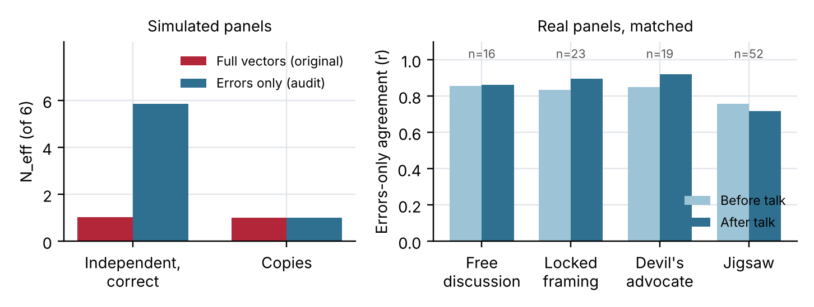
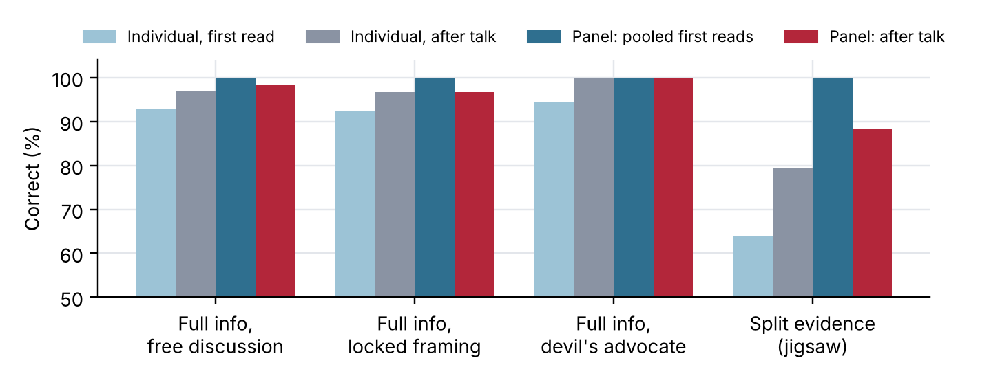

PDF: Lock_Before_You_Talk.pdf · Code and logs: github.com/vdimarco/apart-swarm-alignment · first draft (retracted claims)
When several AI agents check the same thing, a natural design lets them talk first and then vote. Talk can share evidence. It can also make agents copy each other, so that a panel of six carries the information of one. Which effect wins decides whether discussion makes multi-agent oversight safer.
We built a controlled test. Panels of six models judge fictional village cases with a known culprit, so every answer can be scored without an AI judge. We compare three decision rules on the same panels: the average of each agent's first read before any talk, the average after two rounds of discussion, and agents told that their first read is locked. We also split the evidence, so that each agent sees half of the clues.
This report differs from our first draft. A same-weekend audit found that our agreement measure counted correct, independent agents as one voice, and that our "same-model premium" was an artifact. We kept the pre-registration unchanged and report what holds up after the fixes.
Contributions.
Correlated errors in AI crowds. Kim et al. (2025) find that across more than 350 LLMs, models make strongly correlated mistakes. Spiro (2026) reports error correlations of 0.74 to 0.82 between frontier forecasters, and Begin et al. (2026) find that preference tuning lowers ten forecasters to about 1.4 effective ones. These studies measure static forecasts. We measure panels before and after they talk.
Conformity and debate. Weng et al. (2025) show that LLM agents conform to the majority in groups. Multi-agent debate (Du et al., 2023) uses discussion to improve answers. Our split-evidence result shows the opposite risk: discussion can lose information that a simple average keeps.
Hidden profiles. In human groups, Stasser and Titus (1985) found that discussion favors shared information, so groups miss answers that only their pooled private information reveals. Our jigsaw arm reproduces this pattern in LLM panels.
Multi-agent risk. Hammond et al. (2025) name network effects and correlated failures as multi-agent risks. Our companion submission (DiMarco, 2026) measures herding in 538 games of AI social deduction and uses the same errors-only correction.
Cases. A deterministic generator writes 30 fictional village cases, each with 6 suspects, 3 traits per suspect and witness clues. In 20 consistent cases the clues identify one culprit. In 10 adversarial cases, two loud clues point at an innocent decoy, and one quiet clue rules the decoy out. A checker confirms that exactly one suspect fits all clues. A hard bank of 12 cases with 8 suspects rules out the decoy only through a negative sighting.
Panels. The main panel has six models from six families: Qwen 3.5 397B, GLM 5.2, Qwen 3.8 27B, DeepSeek V4 Flash, Gemma 4 31B and Gemma 4 26B, all hosted by Adaption, at temperature 1.0. Each agent returns strict JSON probabilities over the suspects. A duplicate arm uses five Qwen 3.5 copies and one GLM 5.2.
Conditions. C1: one first read, no talk. C2: first read, one statement round, one reply round in which each agent sees the others' anonymized statements, then a final read. C3: as C2, but each agent is told its first read is locked and will count. Devil's advocate: as C2, with agent 0 told to argue against the emerging favorite. Jigsaw: as C2, but each clue goes to 3 of the 6 agents by a fixed round-robin split. Each cell runs 30 cases × 2 seeds = 60 panels (57 for devil's advocate, 23 per arm on the hard bank).
Decision rules. Pooled first reads: the average of the six first reads, taken before any talk. Discussed vote: the average of the final reads. The panel is right when the top suspect of the average is the culprit.
Agreement. For each pair of agents, we compute the Pearson correlation of their probabilities over the innocent suspects only, leaving out the culprit. Effective number N_eff = n / (1 + (n − 1) r), with r clipped to [0, 1]. The errors-only correlation is undefined when an agent puts all its mass on one suspect, so we compare before and after talk only on panels where both are defined.
Statistics. We compare decision rules on the same panels with exact McNemar tests, and also by scenario, because the two seeds of a case are not independent. All analyses use the logged calls; nothing is typed by hand.
Data. The repository holds 11,402 logged records, including a stopped first sweep and a smoke test. The analysis uses 8,082 calls from four runs. 8–16% of estimates failed to parse, mostly from reasoning truncation, and are left out.
Pre-registration and deviations. Hypotheses H1–H4 were committed before the first model call (commit b01f872). We changed the panel size from 5 to 6, used 30 cases and 2 seeds, and did not run the placebo bank. The jigsaw and devil's-advocate arms were added later and are exploratory.
We simulated panels of six agents that each solve a case alone, with independent noise on the innocent suspects. Whole-vector agreement scores them as 1.02 effective forecasters out of 6. Errors-only agreement scores them as 5.86. Copies of one view score 1.00 on both (Figure 1, left).
On the real panels, whole-vector agreement rose from 0.875 before talk to 0.982 after free discussion and 0.992 with locked framing. We first reported this as collapse. On errors only, matched panels agree at 0.857 before free discussion and 0.863 after (16 panels). With locked framing, agreement goes from 0.836 to 0.896 (23 panels), with a devil's advocate from 0.849 to 0.919 (19), and in the jigsaw arm from 0.759 to 0.718 (52) (Figure 1, right). The panels share their errors before they talk. Discussion adds little in free discussion and somewhat more in the other arms, on small matched samples.

| Arm | Panels | Pooled first reads | Discussed vote | Exact McNemar p |
|---|---|---|---|---|
| Full info, free discussion | 60 | 60 | 59 | 1.00 |
| Full info, locked framing | 60 | 60 | 58 | 0.50 |
| Full info, devil's advocate | 57 | 57 | 57 | 1.00 |
| Split evidence (jigsaw) | 60 | 60 | 53 | 0.016 |
| Hard bank, six families | 23 | 23 | 23 | 1.00 |
With full evidence, every rule is near ceiling, and we cannot tell them apart. With split evidence, each agent's first read is right only 64% of the time, but the average of the six first reads names the culprit in all 60 panels. After discussion, individual agents improve to 80%, yet the panel vote drops to 53 of 60. All 7 changes go one way: the pooled reads were right and the discussed vote was wrong. The failures come from 5 of 30 cases (scenario-level sign test p = 0.06). In the 3 failed adversarial panels, the discussed vote chose the planted decoy each time.

Reading. This matches the hidden-profile pattern (Stasser and Titus, 1985). The information needed is spread across the panel. Averaging private reads combines it. Discussion pulls agents toward a story that fits the shared clues, and some panels settle on the wrong one.
The share of agents giving 99% or more to one suspect fell after talk in every arm: from 74% to 51% in free discussion, 67% to 49% with locked framing, 76% to 29% with a devil's advocate, and 40% to 21% in the jigsaw arm. Discussion makes agents hedge, even when it makes them more accurate.
Implications. First, measures of agent independence must leave out the answer the agents agree on, or correct panels will look like herds. Second, a panel's private first reads are a resource that discussion can spend. Recording each agent's independent read before any talk, and pooling those reads, costs almost nothing. In our data it never lost a decision and, when the evidence was split, it kept 7 decisions that discussion lost. Monitoring swarms often have split evidence: different monitors see different logs. Third, confident retractions matter: two of our first headline claims were measurement artifacts, and we found them only by testing the measure on cases with a known answer.
Limitations. The cases are synthetic logic puzzles at near-ceiling accuracy, so the full-evidence arms cannot separate the decision rules. The jigsaw result rests on 60 panels from 30 cases and is suggestive at the scenario level (p = 0.06). The jigsaw arm was not pre-registered. Errors-only agreement is undefined for one-hot answers, so the matched comparisons use 16 to 52 of 60 panels and may favor less certain models. We used open-weight models on one host and one discussion format. Appendix A gives more detail.
Future work. Test pooled first reads against discussion on harder, open-ended tasks, with more cases per arm, and with evidence split the way real monitors see it.
After correcting our own measure, LLM panels did not collapse into one voice through discussion; they already shared their errors before talking. When the evidence was split, the average of locked first reads beat the discussed vote, 60 to 53. For multi-agent oversight, lock and pool independent reads before the agents talk.
Code, scenario banks and all 11,402 logged calls (prompts and outputs): github.com/vdimarco/apart-swarm-alignment. python -m tests.test_analyze runs the simulation check, and python -m src.audit_stats reproduces every number in Sections 4.1 to 4.3. All code, runs and analysis were done during the hackathon (November 7 to 8, 2026). No information hazard: the cases are fictional puzzles.
LLM coding agents wrote most of the code and ran the experiment. Claude (Anthropic) audited the analysis, wrote the corrected statistics and drafted this report. Every number comes from scripts run on the published logs. The audit changed three headline claims, listed in Section 4.4 and Appendix B. The author reviewed the report and is responsible for its content. References were checked against their sources.
Begin, J., Gho, B., Muppavarapu, S., Tsay, T., Mohan, A., Shaik, A., Li, R., Sharma, V., and Vaidheeswaran, A. (2026). Preference optimization drives monoculture in LLM prediction markets. arXiv:2606.26583.
DiMarco, V. (2026). Why AI towns hang their own: herding and model lineage in multi-agent social deduction. Swarm Alignment Hackathon. https://github.com/vdimarco/why-ai-towns-hang-their-own
Du, Y., Li, S., Torralba, A., Tenenbaum, J. B., and Mordatch, I. (2023). Improving factuality and reasoning in language models through multiagent debate. arXiv:2305.14325 (ICML 2024).
Hammond, L., et al. (2025). Multi-Agent Risks from Advanced AI. Cooperative AI Foundation Technical Report. arXiv:2502.14143.
Kim, E. M., Garg, A., Peng, K., and Garg, N. (2025). Correlated errors in large language models. Proceedings of the 42nd International Conference on Machine Learning, PMLR 267, 30038–30066.
Kish, L. (1965). Survey Sampling. New York: Wiley.
Spiro, T. (2026). The Oracle's Fingerprint: correlated AI forecasting errors and the limits of bias transmission. arXiv:2605.00844.
Stasser, G., and Titus, W. (1985). Pooling of unshared information in group decision making: biased information sampling during discussion. Journal of Personality and Social Psychology, 48(6), 1467–1478.
Weng, Z., Chen, G., and Wang, W. (2025). Do as we do, not as you think: the conformity of large language models. International Conference on Learning Representations (ICLR). arXiv:2501.13381.
The cases are fictional text puzzles. No people took part, no real systems were touched, and the adversarial cases mislead only the panels under study. The main dual-use risk is that knowing how discussion loses split evidence could help someone steer a panel of AI monitors toward a wrong answer. We judge this low, because the safeguard we describe, pooling locked first reads, is simple to adopt and is the main takeaway.
| First-draft claim | Check | Result |
|---|---|---|
| Discussion collapses panels to N_eff ≈ 1.0 | Simulation test; errors-only agreement on matched panels | Independent correct agents score 1.02 on the old measure. Errors-only: 0.857 → 0.863. Retracted. |
| Same-model premium +0.082 [0.074, 0.089] | Inspect what the duplicate arm compares; panel-level bootstrap | Copies are one-hot and correct; interval widens to [0.068, 0.095] even on the old measure. Retracted. |
| Locked first reads fail | Score the locked reads as the vote | Pooled locked reads: never worse; better with split evidence. Revised. |
| Jigsaw is a partial, lossy de-correlator | Compare decision rules on the same panels | The loss comes from discussion, not from the split: pooled reads 60/60, discussed vote 53/60. |
| Agreement-based collusion detection flags 66–97% of honest strangers | Measure used | Built on whole-vector agreement. Withdrawn. |
| Companion study is pre-existing work | Dates and authorship | It is a separate weekend submission on third-party data. Corrected. |
| Logs public | Repository contents | Logs were not in the repository. Now published. |